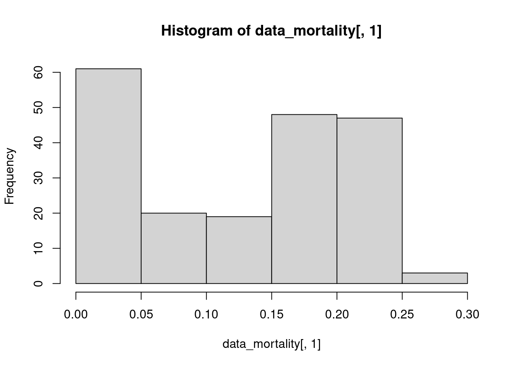
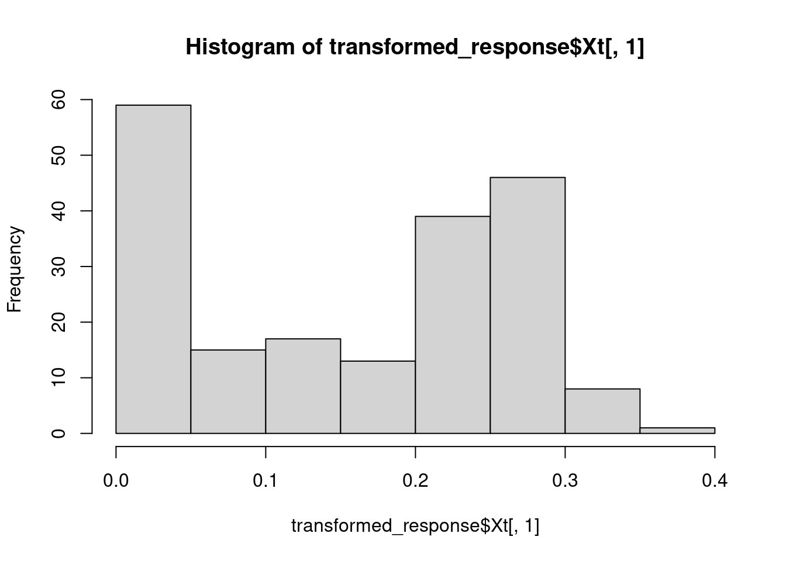
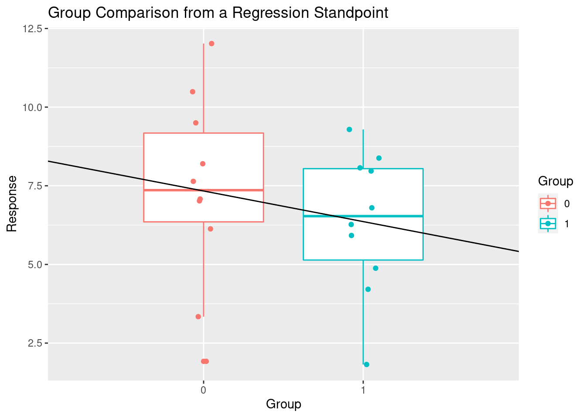

Chapter 6 ANOVA Fundamentals
Analysis of variance (ANOVA) is a collection of statistical models and their associated estimation procedures used to analyze the differences among means. ANOVA is based on the law of total variance@ref(#EVE), where the observed variance in a particular variable is partitioned into components attributable to different sources of variation.3
6.1 Law of Total Variance
The law of total variance, also known as EVE’s law,4 is very important for understanding how ANOVA works.
\[\begin{equation} \label{eqn:EVE} \mathrm{Var}(Y) = \mathrm{E}[\mathrm{Var}(Y|X)] + \mathrm{Var}(\mathrm{E}[Y|X]) \end{equation}\]
In the context of ANOVA and simple linear regression with a response variable \(Y\) and an explanatory variable \(X\) (coded so that it is a real random variable), can be interpreted as
\[\begin{equation} \label{eqn:EVE2} \mathrm{Var}(Y) = \underbrace{\mathrm{E}[\mathrm{Var}(Y|X)]}_{\text{}} + \mathrm{Var}(\mathrm{E}[Y|X]) \end{equation}\]
library(cellWise)
library(knitr)
opts_chunk$set(tidy.opts=list(width.cutoff=50),tidy=TRUE)6.2 Step 1: Make up Data
# dataset16.3 Checking the Assumptions
After running your ANOVA, check that the assumptions about the errors are met so that you can do statistical inference. Those assumptions are:
- \(\text{E}(\epsilon_{ij})=0,\ \text{Var}(\epsilon_{ij})=\sigma_{i}^2 < \infty,\ \text{for all }i, j.\)
- The \(\epsilon_{ij}\) are mutually independent and normally distributed.
- \(\sigma_{i}^2=\sigma^2\ \text{for all } i.\)
6.3.1 Checking Assumption 1
6.3.2 Assumption 1 was violated.
6.3.3 Checking Assumption 2
6.3.4 Assumption 2 was violated.
6.3.5 Checking Assumption 3
6.3.6 Assumption 3 was violated.
A variance-stabilizing transformation of the response variable may help.
data("data_mortality")
transformed_response = transfo(data_mortality, prestandardize = FALSE)##
## The input data has 198 rows and 91 columns.hist(data_mortality[, 1])
hist(transformed_response$Xt[, 1])
shapiro.test(data_mortality[, 1])##
## Shapiro-Wilk normality test
##
## data: data_mortality[, 1]
## W = 0.86877, p-value = 4.552e-12shapiro.test(transformed_response$Xt[, 1])##
## Shapiro-Wilk normality test
##
## data: transformed_response$Xt[, 1]
## W = 0.88041, p-value = 1.968e-116.4 Regression and Categorical Variables
library(tidymodels)
library(ggplot2)There is a profound connection between linear regression and ANOVA. In order to see this, you have to understand that the categorical variables of an ANOVA can be coded with numbers, which allows them to be used in a linear regression model. Let us recall5 the multiple linear regression model.
Given a random sample of \(n\) observations \((Y_{i}, X_{i1}, . . ., X_{ip}),\ i=1,...,n\), the basic multiple linear regression model is
\[ Y_{i}=\beta_0+\beta_1X_{i1}+...+\beta_pX_{ip}+\epsilon_i,\quad i=1,...,n \]
where each \(\epsilon_i\) is a random variable with a mean of \(0\). In matrix form, this can be written as
\[ \begin{bmatrix} Y_1\\ Y_2\\ \vdots\\ Y_n \end{bmatrix} = \begin{bmatrix} 1 & X_{1,1} & X_{1,2} & \dots & X_{1, p}\\ 1 & X_{2,1} & X_{2,2} & \dots & X_{2, p}\\ \vdots & \vdots & \vdots & \ddots & \vdots\\ 1 & X_{n,1} & X_{n,2} & \dots & X_{n, p}\\ \end{bmatrix} \begin{bmatrix} \beta_0\\ \beta_1\\ \vdots\\ \beta_p\\ \end{bmatrix} + \begin{bmatrix} \epsilon_0\\ \epsilon_1\\ \vdots\\ \epsilon_n\\ \end{bmatrix} \]
Here, the \(X_{i,j}\) represent our coded categorical variables. These categorical variables are coded according to the hypotheses of interest. In many cases, the coding is done so that the newly coded variables are contrasts of the old categorical variables.
A contrast is a linear combination of variables such that the coefficients sum to 0. \[\sum_i{a_i\theta_i}\quad\text{such that}\quad\sum_i{a_i}=0\]
Unlike in ANOVA, in regression, it is best to use coding schemes based on orthogonal and fractional contrasts. Orthogonal contrasts are a set of contrasts in which, for any distinct pair, the sum of the cross-products of the coefficients is 0. \[ \sum_i{a_ib_i}=0 \]
I believe that a fractional contrast is such that \[ \sum_i{|a_i|}=2 \]
Categorical variable coding schemes can be easily expressed in a matrix format. The convention is to have the old categorical variables as the row headers and the newly coded variables as the column headers. In such a matrix, the \([c_{ij}]\) entry indicates the value of the \(j^{th}\) level of the new variable for the \(i^{th}\) level of the old variable. Here is an example of such a matrix constructed using orthogonal and fractional contrasts.
(contr_mat = matrix(data = c(1, 0, -1, 0.5, -1, 0.5),
nrow = 3, ncol = 2))## [,1] [,2]
## [1,] 1 0.5
## [2,] 0 -1.0
## [3,] -1 0.5Interpreting this coding scheme in the context of our linear model, we see that
\[ \begin{aligned} E(Y_i|X_{i1}=1,X_{i2}=\tfrac{1}{2}) &= \beta_0+\beta_1+\tfrac{1}{2}\beta_2 &= \mu_1 \\ E(Y_i|X_{i1}=0,X_{i2}=-1) &= \beta_0-\beta_2 &= \mu_2\\ E(Y_i|X_{i1}=-1,X_{i2}=\tfrac{1}{2}) &= \beta_0-\beta_1+\tfrac{1}{2}\beta_2 &= \mu_3 \end{aligned} \]
or, in matrix format, \[ \begin{bmatrix} 1 & 1 & \tfrac{1}{2} \\ 1 & 0 & -1 \\ 1 & -1 & \tfrac{1}{2} \end{bmatrix} \begin{bmatrix} \beta_0 \\ \beta_1 \\ \beta_2 \end{bmatrix} = \begin{bmatrix} \mu_1 \\ \mu_2 \\ \mu_3 \end{bmatrix} \]
We can solve this for \(\boldsymbol{\beta}\) for interpretation’s sake.
solve(cbind(rep(1, nrow(contr_mat)), contr_mat))## [,1] [,2] [,3]
## [1,] 0.3333333 0.3333333 0.3333333
## [2,] 0.5000000 0.0000000 -0.5000000
## [3,] 0.3333333 -0.6666667 0.3333333Let’s look at another contrast matrix and see if we can interpret it.
contr.helmert(n = 3)## [,1] [,2]
## 1 -1 -1
## 2 1 -1
## 3 0 2solve(cbind(rep(1, 3), contr.helmert(n = 3)))## 1 2 3
## [1,] 0.3333333 0.3333333 0.3333333
## [2,] -0.5000000 0.5000000 0.0000000
## [3,] -0.1666667 -0.1666667 0.3333333Perhaps you have heard of polynomial regression? Polynomial regression is just a special case of linear regression in a different basis. In polynomial regression, (just like multiple linear regression) if you use all of your explanatory variables, then you will likely get multi-collinearity problems.
contr.poly(n = 3)## .L .Q
## [1,] -7.071068e-01 0.4082483
## [2,] -7.850462e-17 -0.8164966
## [3,] 7.071068e-01 0.4082483(A = solve(cbind(rep(1, 3), contr.poly(n = 3))))## [,1] [,2] [,3]
## 0.3333333 0.3333333 0.3333333
## .L -0.7071068 0.0000000 0.7071068
## .Q 0.4082483 -0.8164966 0.4082483The first matrix shows how to code the levels of your categorical variable and the second matrix is used for interpretation.
For example, we can test whether the difference between the means from two populations are equal by doing a linear regression or an ANOVA.
Let’s make up some data and try it!
source(file.path("src", "fabricate.R"))
design = data.frame(group = c(0, 1), n = c(10, 10))
data1 = fabricate(flr = design)Let’s check out our data.
# Make a linear model
data1_lm_independent_samples = lm(response ~ group,
data = data1)
# plot
ggplot(data = data1, aes(x = group, y = response, color = factor(group))) +
geom_boxplot() + geom_jitter(height = 0, width = 0.1) +
geom_abline(intercept = data1_lm_independent_samples$coefficients[1],
slope = data1_lm_independent_samples$coefficients[2]) +
labs(title = "Group Comparison from a Regression Standpoint",
color = "Group", x = "Group", y = "Response") +
scale_x_discrete(limits = c(0, 1))## Warning: Continuous limits supplied to discrete scale.
## Did you mean `limits = factor(...)` or `scale_*_continuous()`?
The way you code your categorical variables in a linear model is extremely important. Different codings lead to different interpretations of the parameters (betas) in your model. For us, our model is \[ Y_i = \beta_0+\beta_{i1}X_{i1}+\epsilon_i \]
From this, we have \[ \begin{aligned} E(Y_i|X_{i1}=0) &=\beta_0 \\ E(Y_i|X_{i1}=1) &=\beta_0 + \beta_1 \end{aligned} \]
From which we can derive,
\[ \beta_1 = E(Y_i|X_{i1}=1) - E(Y_i|X_{i1}=0) \]
So, our slope estimate is the estimated amount by which the mean of group1 is above that of the mean of group0.
Run linear regression
summary(data1_lm_independent_samples)##
## Call:
## lm(formula = response ~ group, data = data1)
##
## Residuals:
## Min 1Q Median 3Q Max
## -5.4140 -1.2732 0.1075 1.7865 4.6860
##
## Coefficients:
## Estimate Std. Error t value Pr(>|t|)
## (Intercept) 7.3340 0.8509 8.619 8.35e-08 ***
## group -0.9730 1.2034 -0.809 0.429
## ---
## Signif. codes: 0 '***' 0.001 '**' 0.01 '*' 0.05 '.' 0.1 ' ' 1
##
## Residual standard error: 2.691 on 18 degrees of freedom
## Multiple R-squared: 0.03505, Adjusted R-squared: -0.01856
## F-statistic: 0.6538 on 1 and 18 DF, p-value: 0.4293Run ANOVA
data1$group = as.factor(data1$group)
data1_ANOVA_independent_samples = aov(response ~ group,
data = data1)
summary(data1_ANOVA_independent_samples)## Df Sum Sq Mean Sq F value Pr(>F)
## group 1 4.73 4.734 0.654 0.429
## Residuals 18 130.33 7.241Run t-Test
(data1_t_test_independent_samples = t.test(x = data1[data1$group ==
1, "response"], y = data1[data1$group == 0, "response"],
paired = FALSE, var.equal = TRUE))##
## Two Sample t-test
##
## data: data1[data1$group == 1, "response"] and data1[data1$group == 0, "response"]
## t = -0.80855, df = 18, p-value = 0.4293
## alternative hypothesis: true difference in means is not equal to 0
## 95 percent confidence interval:
## -3.501212 1.555212
## sample estimates:
## mean of x mean of y
## 6.361 7.334Notice the similarities.
# Confidence interval for the difference in the
# means
confint(data1_lm_independent_samples, "group", level = 0.95)## 2.5 % 97.5 %
## group -3.501212 1.555212data1_t_test_independent_samples$conf.int## [1] -3.501212 1.555212
## attr(,"conf.level")
## [1] 0.95# p-values
with(summary(data1_lm_independent_samples), unname(pf(fstatistic[1],
fstatistic[2], fstatistic[3], lower.tail = F)))## [1] 0.4293292summary(data1_ANOVA_independent_samples)[[1]][[1, 5]]## [1] 0.4293292data1_t_test_independent_samples$p.value## [1] 0.4293292Now, let’s look at something else. The CO2 data frame has 84 rows and 5 columns of data from an experiment on the cold tolerance of the grass species Echinochloa crus-galli.
data("CO2")
CO2[sample(nrow(CO2), size = 5), ]## Plant Type Treatment conc uptake
## 1 Qn1 Quebec nonchilled 95 16.0
## 52 Mn2 Mississippi nonchilled 250 30.6
## 14 Qn2 Quebec nonchilled 1000 44.3
## 47 Mn1 Mississippi nonchilled 500 30.9
## 77 Mc2 Mississippi chilled 1000 14.4What is a linear model? In the context of linear regression, a linear model is a relationship between the responses and the explanatory variables that is linear in the parameters.
CO2_recipe = recipe(uptake ~ ., data = CO2) %>%
step_dummy(c("Type", "Treatment"))
# see contrasts() function
CO2_linear_model = linear_reg() %>%
set_engine("lm", contrasts = list(Plant = "contr.poly"))
CO2_workflow = workflow() %>%
add_model(CO2_linear_model) %>%
add_recipe(CO2_recipe)
CO2_fit = CO2_workflow %>%
fit(data = CO2)CO2_fit %>%
pull_workflow_fit() %>%
tidy()## # A tibble: 15 x 5
## term estimate std.error statistic p.value
## <chr> <dbl> <dbl> <dbl> <dbl>
## 1 (Intercept) 19.5 1.17 16.7 2.96e-26
## 2 Plant.L -22.9 2.27 -10.1 2.17e-15
## 3 Plant.Q -4.62 2.27 -2.03 4.57e- 2
## 4 Plant.C 4.67 2.27 2.06 4.34e- 2
## 5 Plant^4 2.34 2.27 1.03 3.06e- 1
## 6 Plant^5 4.31 2.27 1.90 6.13e- 2
## 7 Plant^6 -0.0390 2.27 -0.0172 9.86e- 1
## 8 Plant^7 -2.04 2.27 -0.897 3.73e- 1
## 9 Plant^8 -3.28 2.27 -1.44 1.53e- 1
## 10 Plant^9 -9.07 2.27 -4.00 1.56e- 4
## 11 Plant^10 0.546 2.27 0.241 8.10e- 1
## 12 Plant^11 1.91 2.27 0.843 4.02e- 1
## 13 conc 0.0177 0.00223 7.96 1.97e-11
## 14 Type_Mississippi NA NA NA NA
## 15 Treatment_chilled NA NA NA NA